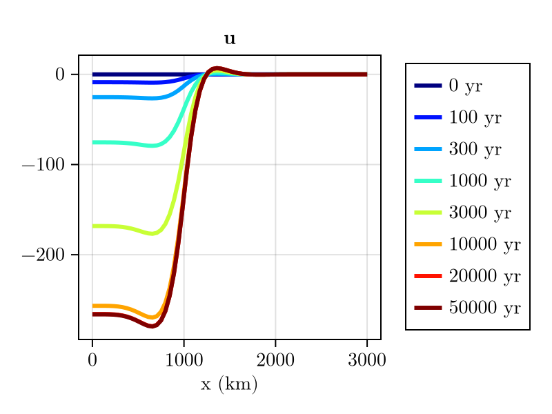
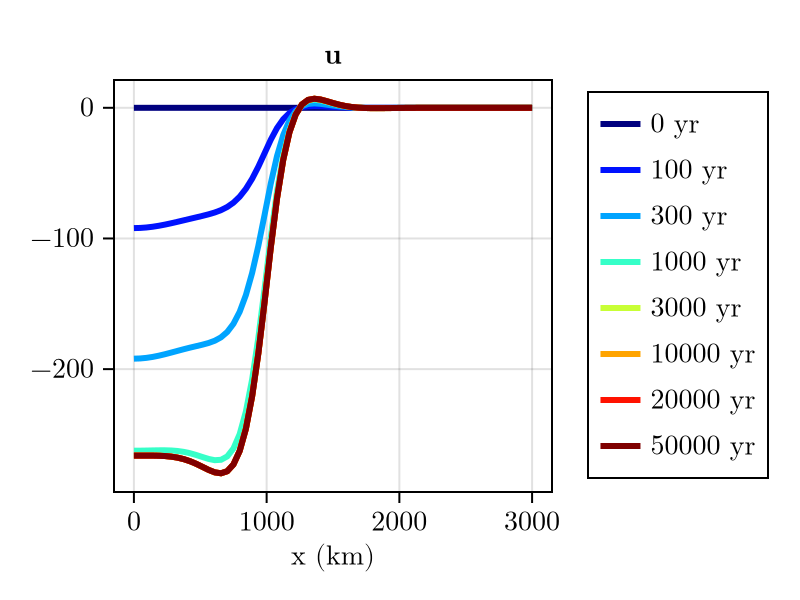

Alternative models
Elastic Lithosphere, Relaxed Asthenosphere (ELRA)
Sometimes people might want to use ELRA (Le Meur and Huybrechts, 1996) for comparison purposes. This can be simply done by modfying SolidEarth as follows:
using FastIsostasy, CairoMakie
T, W, n = Float32, 3f6, 7
domain = RegionalDomain(W, n, correct_distortion = false)
H_ice_0 = zeros(domain)
H_ice_1 = 1f3 .* (domain.R .< 1f6)
t_ice = [0, 1, 5f4]
H_ice = [H_ice_0, H_ice_1, H_ice_1]
it = TimeInterpolatedIceThickness(t_ice, H_ice, domain)
bcs = BoundaryConditions(domain, ice_thickness = it)
sealevel = RegionalSeaLevel()
solidearth = SolidEarth(
domain,
tau = 3f3,
lithosphere = RigidLithosphere(),
mantle = RelaxedMantle(),
)
nout = NativeOutput(vars = [:u, :ue, :dz_ss, :H_ice],
t = [0, 1f2, 3f2, 1f3, 3f3, 1f4, 2f4, 5f4])
sim = Simulation(domain, bcs, sealevel, solidearth, (0, 50f3); nout = nout)
run!(sim)
println("Took $(sim.timer.t_computation[end]) seconds!")
fig = plot_transect(sim, [:u])
ELRA presents many shortcomings and is not recommended for real applications. It is only implemented in FastIsostasy for comparison purposes, since it is still widely used in the literature.
ELRA with 2D relaxation time
Sometimes people might want to use ELRA with 2D maps of the relaxation time, as suggested by van Calcar et al. (2026). This can be done by using [get_relaxation_time_weaker] or get_relaxation_time_stronger to generate a 2D map of the relaxation time from a 2D map of the viscosity. First let's generate an idealised 2D map of the viscosity, with a Gaussian-shaped low-viscosity anomaly in the center of the domain:
using LinearAlgebra
sigma = diagm([(W/4)^2, (W/4)^2])
log10visc = generate_gaussian_field(domain, 21f0, [0f0, 0], -1f0, sigma)
heatmap(log10visc)
Now let's use this map to generate a 2D map of the relaxation time:
τ_weak = get_relaxation_time_weaker.(10 .^ log10visc) # alternative: get_relaxation_time_stronger
heatmap(τ_weak)
Finally, we can use this map to define a new SolidEarth and run the simulation:
solidearth_weak = SolidEarth(
domain,
tau = T.(τ_weak),
lithosphere = RigidLithosphere(),
mantle = RelaxedMantle(),
)
sim_weak = Simulation(domain, bcs, sealevel, solidearth_weak, (0, 50f3); nout = nout)
run!(sim_weak)
println("Computation time (s): $(sim_weak.timer.t_computation[end])")
fig = plot_transect(sim_weak, [:u])
As expected, the center of the domain is displaced faster than the margins!